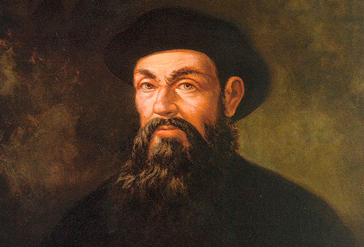

Фердинанд Магеллан — португальський мореплавець, який очолив першу експедицію, що обійшла земну кулю (1519–1522 роки).
Магеллан працював на службу Іспанії та організував експедицію, яка довела, що Земля кругла. Він загинув у сутичці на Філіппінах, але його команда завершила подорож.
